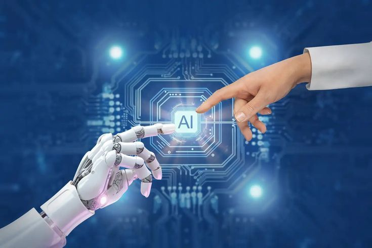

Artificial Intelligence

Apa itu Artificial Intelligence?
Artificial Intelligence (AI) atau kecerdasan buatan adalah cabang ilmu komputer yang berfokus pada penciptaan sistem yang dapat berpikir, belajar, dan bertindak seperti manusia. AI memungkinkan mesin untuk meniru fungsi kognitif manusia seperti pemecahan masalah, pengambilan keputusan, dan pemahaman bahasa.
Bagaimana AI Bekerja?
AI bekerja dengan menggabungkan data dalam jumlah besar dengan pemrosesan yang cepat dan algoritma cerdas. Dengan mempelajari pola dari data, AI dapat membuat prediksi dan keputusan. Semakin banyak data yang diproses, semakin akurat hasil yang diberikan.
Contoh Penerapan AI
1. Asisten Virtual: Siri, Google Assistant, dan Alexa menggunakan AI untuk memahami perintah suara.
2. Mobil Otonom: Mobil tanpa pengemudi menggunakan AI untuk membaca jalan dan menghindari rintangan.
3. Rekomendasi Produk: Platform seperti Netflix dan Spotify menggunakan AI untuk merekomendasikan konten sesuai selera pengguna.
4. Chatbot: Digunakan di layanan pelanggan untuk menjawab pertanyaan secara otomatis.
Masa Depan AI
AI terus berkembang dan diprediksi akan semakin terintegrasi dalam kehidupan sehari-hari. Mulai dari dunia pendidikan, kesehatan, hingga industri kreatif, AI akan menjadi alat yang membantu manusia bekerja lebih efisien dan efektif.
← Kembali ke Informasi